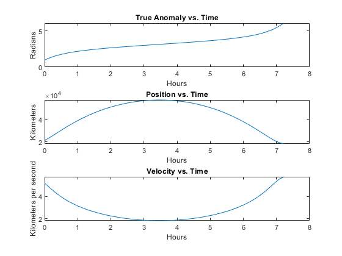
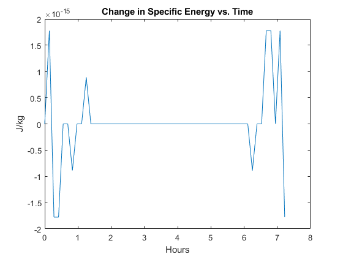
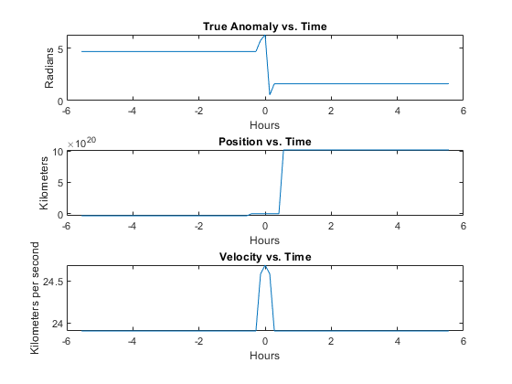
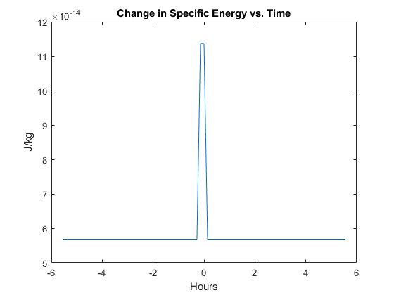

Contents
Problem 1
clear all
clc
re = 1;
e = 0.25000;
a = 2*re;
mu = 398600.4415;
p = a*(1-e^2);
ftheta = @ (theta) (sin(theta)*p/(1+e*cos(theta))-re);
syms theta;
dftheta = matlabFunction(diff(ftheta(theta)));
thetaold = pi;
for i = 1:3
thetanew = thetaold - (ftheta(thetaold)/dftheta(thetaold));
thetaold = thetanew;
end
mes = ['The satellite enters the shadow of the Earth at ', num2str(thetaold), ' radians.'];
disp(mes);
thetaexit = 2*pi-thetaold;
mes = ['The satellite exits the shadow of the Earth at ', num2str(thetaexit), ' radians.'];
disp(mes);
thetaenter = thetaold;
Eenter = 2*atan2(sqrt(1-e)*tan(thetaenter/2),sqrt(1+e));
Eexit = 2*atan2(sqrt(1-e)*tan(thetaexit/2),sqrt(1+e));
Meenter = Eenter - e*sin(Eenter);
Meexit = 2*pi - Meenter;
n = 2*pi/p;
tenter = Meenter/n;
texit = Meexit/n;
tis = texit - tenter;
mes = ['The satellite is in the shadow of the Earth for ', num2str(tis), ' TU.'];
disp(mes);
The satellite enters the shadow of the Earth at 2.7171 radians.
The satellite exits the shadow of the Earth at 3.5661 radians.
The satellite is in the shadow of the Earth for 0.40091 TU.
Problem 3
clear all
clc
mu = 398600.4415;
t0 = 0;
r = [-5357 20459 -2105];
v = [-5.1725 0.3792 0.2882];
h = cross(r,v);
rmag = norm(r);
vmag = norm(v);
hmag = norm(h);
p = (hmag^2)/mu;
energy = (vmag^2)/2 - mu/rmag;
if energy < 0
mes = ('The orbit is elliptical!');
disp(mes);
else
mes = ('The orbit is hyperbolic');
disp(mes);
end
e = sqrt(1+2*energy*(hmag^2/mu^2));
truea = acos(((p/rmag)-1)/e);
eccea = 2*atan2(sqrt(1-e)*tan(truea/2),sqrt(1+e));
meana = eccea - e*sin(eccea);
mes = ['The true, eccentric, and mean anomalies are (respectively): ', num2str(truea), ', ', num2str(eccea), ', and ', num2str(meana)];
disp(mes);
a = (mu/((2*pi/p)^2))^(1/3);
n = sqrt(mu/a^3);
tp = -meana/n;
mes = ['The time of periapsis passage for this orbit is ', num2str(tp), ' seconds.'];
disp(mes);
per = 2*pi*(sqrt(a^3/mu));
t = 0:500:26000;
[trueav,ecceav,meanav] = propogate(t,n,e,tp);
T = t./3600;
rv = p./(1+e.*cos(trueav));
vv = sqrt(2*(energy+(mu./rv)));
fig = 1;
figure(fig);
subplot(3,1,1)
plot(T,trueav)
title('True Anomaly vs. Time')
xlabel('Hours')
ylabel('Radians')
hold on
subplot(3,1,2)
plot(T,rv)
title('Position vs. Time')
xlabel('Hours')
ylabel('Kilometers')
subplot(3,1,3)
plot(T,vv)
title('Velocity vs. Time')
xlabel('Hours')
ylabel('Kilometers per second')
result = find(t==10000);
ta10 = trueav(result);
mes = ['The true anomaly at 10000 seconds is ', num2str(ta10), ' radians.'];
disp(mes);
hold off
energyv = (vv.^2)./2 - mu./rv;
energydiff = energyv - energy;
fig = fig + 1;
figure(fig)
plot(T,energydiff)
title('Change in Specific Energy vs. Time')
xlabel('Hours')
ylabel('J/kg')
mes = ['Since the change in specific energy at any point in time over the course of the orbit is miniscule, my propogations seem to be accurate.'];
disp(mes);
The orbit is elliptical!
The true, eccentric, and mean anomalies are (respectively): 0.97031, 0.57421, and 0.29044
The time of periapsis passage for this orbit is -1272.4281 seconds.
The orbit is elliptical!
The true anomaly at 10000 seconds is 2.929 radians.
Since the change in specific energy at any point in time over the course of the orbit is miniscule, my propogations seem to be accurate.
 
Problem 4
clear all
clc
mu = 398600.4415;
r = [-5357 20459 0];
v = [0 2.4559 24.5587];
h = cross(r,v);
rmag = norm(r);
vmag = norm(v);
hmag = norm(h);
p = (hmag^2)/mu;
energy = (vmag^2)/2 - mu/rmag;
if energy < 0
mes = ('The orbit is elliptical!');
disp(mes);
else
mes = ('The orbit is hyperbolic!');
disp(mes);
end
e = sqrt(1+2*energy*(hmag^2/mu^2));
truea = acos(((p/rmag)-1)/e);
eccea = 2*atanh(sqrt(e-1)*tan(truea/2)/sqrt(1+e));
meana = eccea - e*sinh(eccea);
mes = ['The true, eccentric, and mean anomalies are (respectively): ', num2str(truea), ', ', num2str(eccea), ', and ', num2str(meana)];
disp(mes);
a = p/(e^2-1);
tp = (-(mu/(hmag*p))*((e^2-1)^(3/2)))/meana;
mes = ['The time of periapsis passage for this orbit is ', num2str(tp), ' seconds.'];
disp(mes);
t = -20000:500:20000;
[trueav,ecceav,meanav] = propogateh(t,mu,hmag,e,tp);
T = t./3600;
rv = p./(1+e.*cos(trueav));
vv = sqrt((2*mu./rv)+(mu/a));
fig = 3;
figure(fig);
subplot(3,1,1)
plot(T,trueav)
title('True Anomaly vs. Time')
xlabel('Hours')
ylabel('Radians')
hold on
subplot(3,1,2)
plot(T,rv)
title('Position vs. Time')
xlabel('Hours')
ylabel('Kilometers')
subplot(3,1,3)
plot(T,vv)
title('Velocity vs. Time')
xlabel('Hours')
ylabel('Kilometers per second')
result = find(t==10000);
ta10 = trueav(result);
mes = ['The true anomaly at 10000 seconds is ', num2str(ta10), ' radians.'];
disp(mes);
hold off
energyv = (vv.^2)./2 - mu./rv;
energydiff = energyv - energy;
fig = fig + 1;
figure(fig)
plot(T,energydiff)
title('Change in Specific Energy vs. Time')
xlabel('Hours')
ylabel('J/kg')
mes = ('Since the change in specific energy at any point in time over the course of the orbit is miniscule, my propogations seem to be accurate. They are less accurate around periapsis, but they are nonetheless accurate.');
disp(mes);
The orbit is hyperbolic!
The true, eccentric, and mean anomalies are (respectively): 0.099497, 0.096509, and -2.9169
The time of periapsis passage for this orbit is 0.01175 seconds.
The true anomaly at 10000 seconds is 1.6029 radians.
Since the change in specific energy at any point in time over the course of the orbit is miniscule, my propogations seem to be accurate. They are less accurate around periapsis, but they are nonetheless accurate.
 